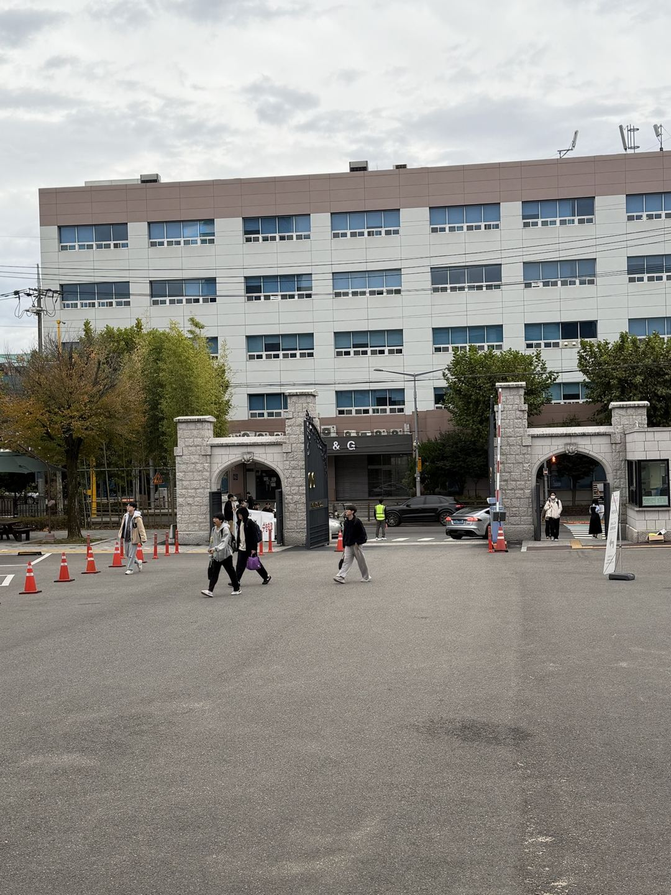
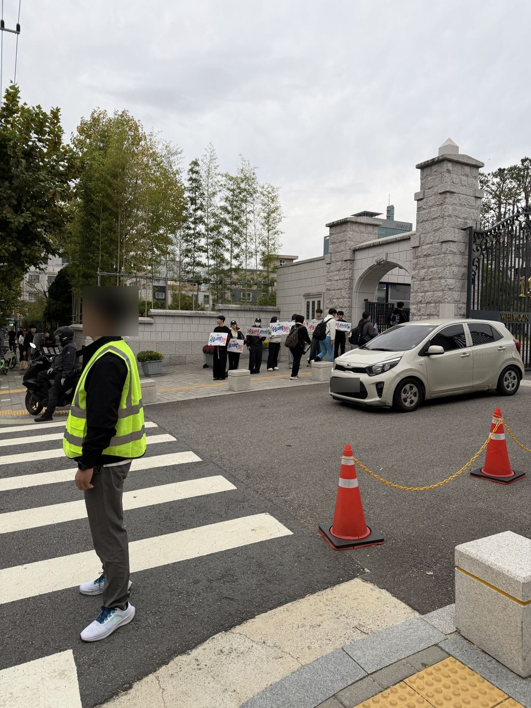
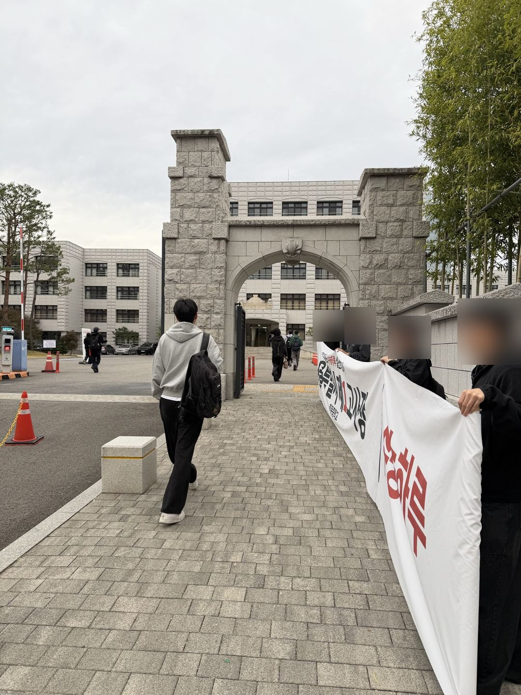
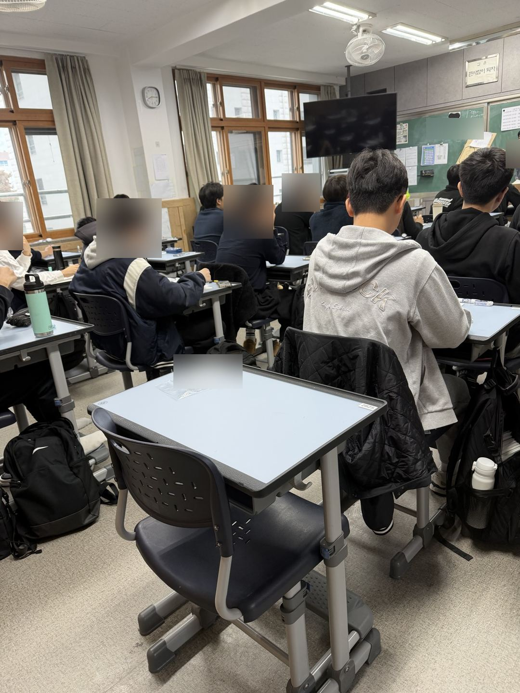
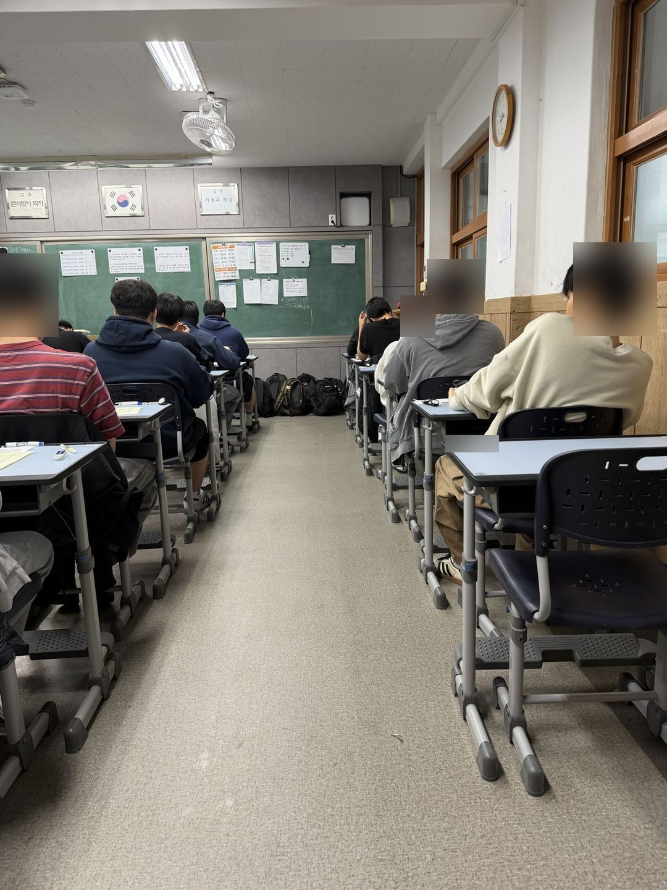

수능 당일은 한 번뿐이지만, 그날의 긴장은 미리 겪어볼 수 있습니다. 수능하루는 실제 학교 교실을 시험장으로 빌려 아침 입실부터 퇴실까지 수능 시간표·OMR 답안지·방송·감독을 그대로 재현하는 현장 모의고사입니다. 김엄마관리형독서실과 같은 (주)수리딩교육이 운영합니다.
대성 더프리미엄 전국 현장 모의고사 · 응시료 86,900원(부가세 포함) · 도시락 9,900원 선택
10월 24일(토) 서울 대치 휘문중학교 · 대성 더프리미엄 전국 현장 모의고사





독서실·학원이 아닌 중학교 교실에서 낯선 책상과 낯선 교실을 경험합니다. 고사실은 성별·탐구 과목에 맞춰 배정합니다.
08:10 입실 완료, 예비령·본령 방송, 영어 듣기 평가, 한국사·탐구까지 수능 당일 시간표 그대로 진행합니다.
수험표와 OMR 답안지, 감독관 확인 절차, 종소리와 안내 방송까지 실제 수능 운영 방식으로 치릅니다.